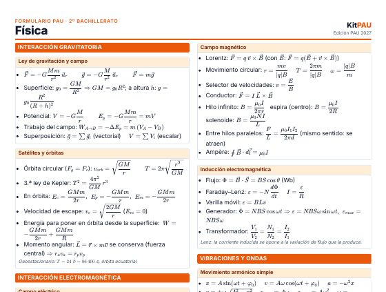

Tabla de derivadas e integrales
Derivadas con regla de la cadena, integrales inmediatas, métodos de integración y áreas. Una página A4 lista para imprimir.
VerPDF gratis · 2 páginas A4 · Edición PAU 2027

Gravitación, campo eléctrico y magnético, inducción, ondas, óptica, física moderna y constantes. Dos páginas A4.
Puedes imprimirlo y compartir el enlace de esta página con tu clase.
Derivadas con regla de la cadena, integrales inmediatas, métodos de integración y áreas. Una página A4 lista para imprimir.
VerMatrices, determinantes, sistemas, geometría en el espacio, análisis y probabilidad. Todo lo que entra en la PAU en dos páginas.
VerEstequiometría, átomo y enlace, termoquímica, cinética, equilibrio, ácido-base, redox y orgánica. Dos páginas A4.
VerFormulario de Matemáticas Aplicadas a las Ciencias Sociales II para la PAU 2027: matrices, programación lineal, análisis, probabilidad e inferencia. PDF gratis en 2 páginas.
VerFórmulas de Empresa y Diseño de Modelos de Negocio para la PAU 2027: costes, umbral de rentabilidad, VAN, TIR, ratios y PMM. PDF gratis en 2 páginas.
VerOrganiza tu estudio
Hojas de cálculo del autor de KitPAU para Excel y Google Sheets.
Material para el examen
La calculadora debe ser científica y no programable. Revisa siempre la lista de modelos admitidos que publica tu universidad.
KitPAU es gratis y sin registro. Si quieres que siga creciendo, puedes apoyarlo.